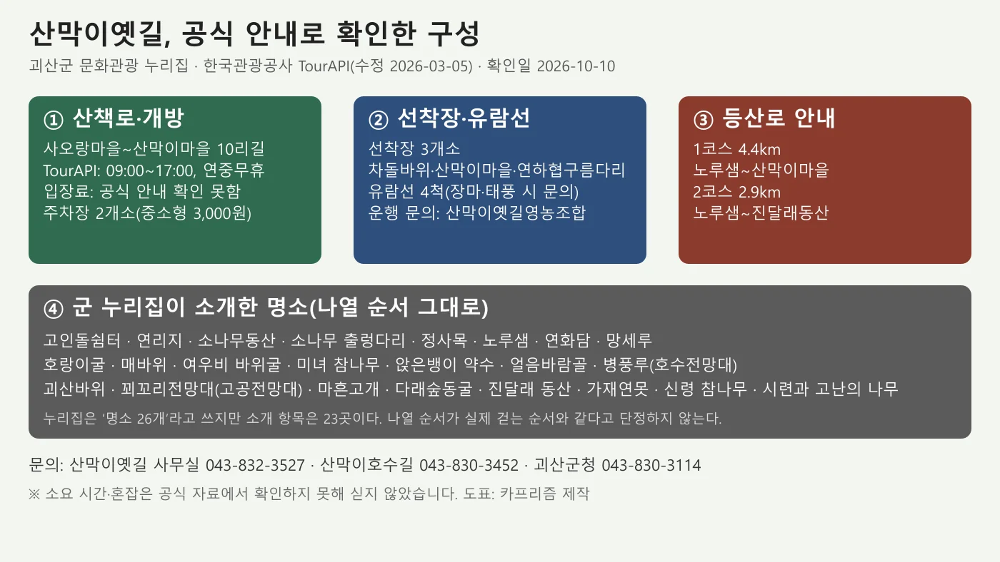
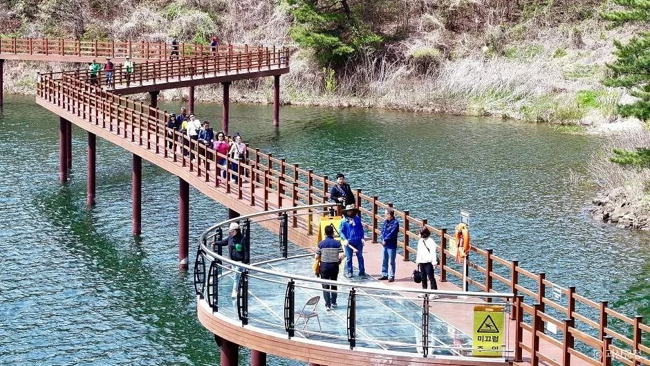
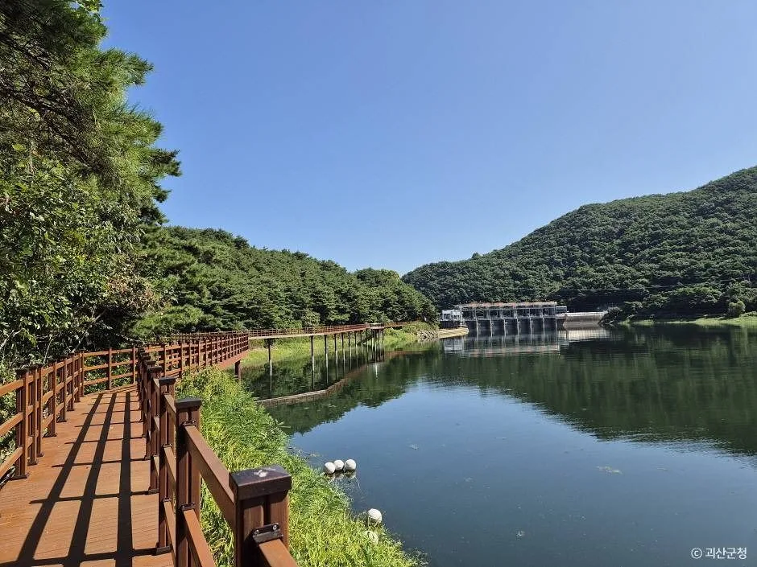
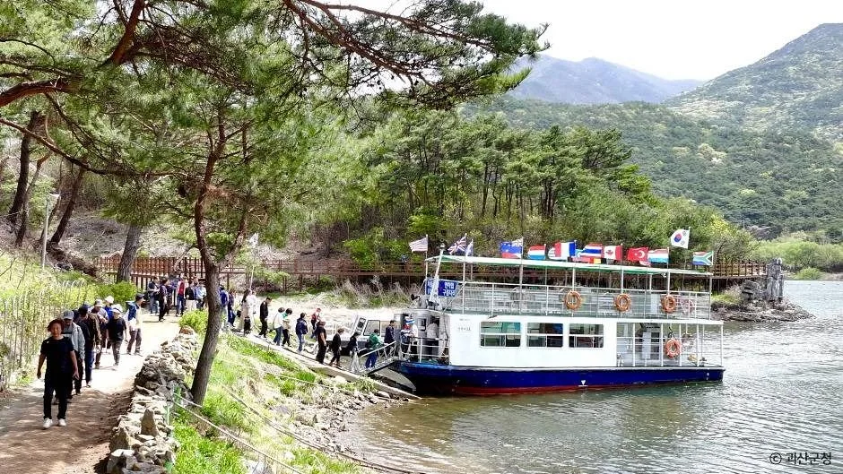
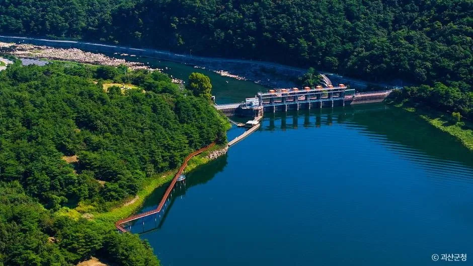
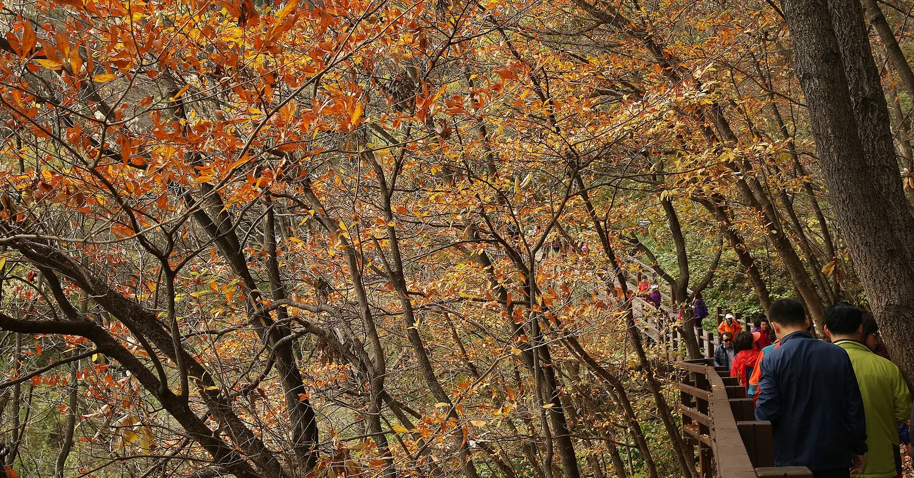
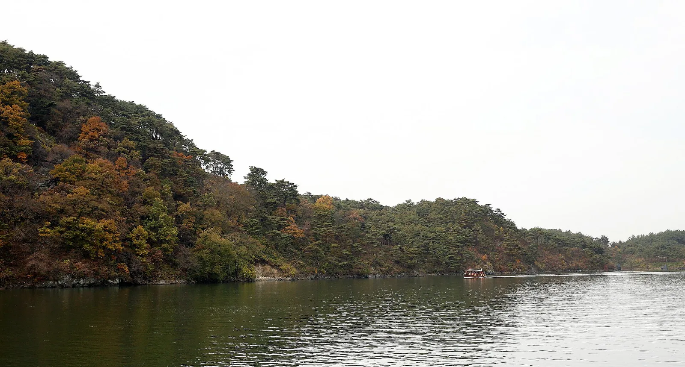
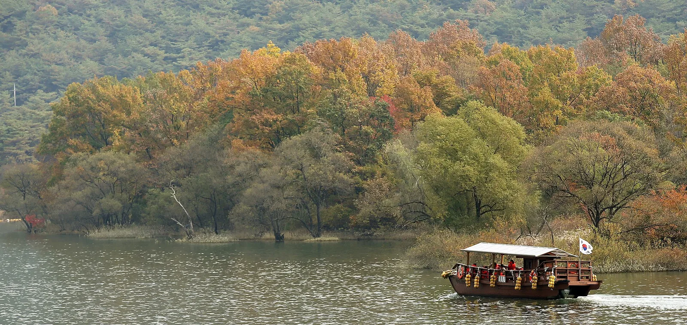
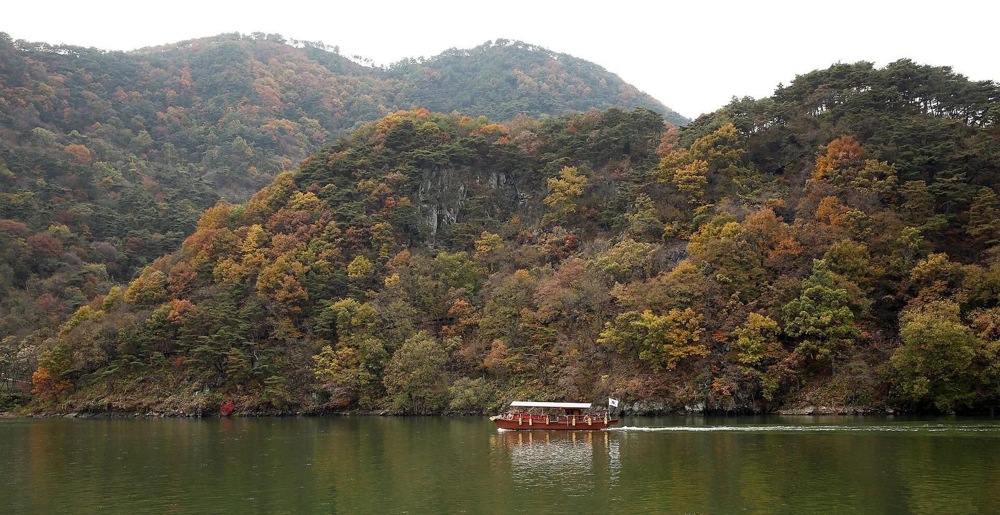
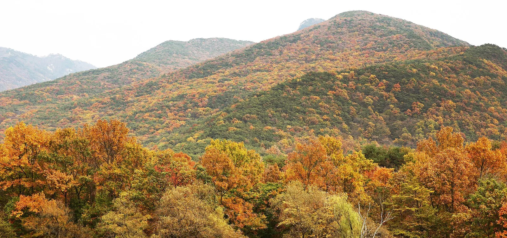

▲ 단풍 든 산과 호수 위의 작은 배. 2014년 10월 30일 촬영. 위키미디어 커먼즈 설명에 '괴산군 칠성면 산막이옛길'로 적혀 있다(코리아넷 기재, 10여 년 전 모습). 사진=Jeon Han(코리아넷, 위키미디어 커먼즈, CC BY-SA 2.0)
"산막이옛길은 몇 시까지 걸을 수 있고, 주차비는 얼마일까?" 충북 괴산군 칠성면의 산막이옛길은 한국관광공사 TourAPI(2026년 3월 5일 수정) 기준 09:00~17:00, 연중무휴로 안내돼 있고, 괴산군 문화관광 누리집에는 주차장이 2개소, 중소형 3,000원·대형 7,000원(제한시간 없음)으로 올라 있다. 이 글은 괴산군 문화관광 누리집, TourAPI, 군청 공지사항을 2026년 10월 10일에 직접 열어 확인한 값만 옮겼다. 확인하지 못한 항목은 그대로 "확인하지 못했다"고 적었다.
💡 먼저 결론
개방 시간·휴무는 TourAPI에, 코스 구성·명소·주차료는 군 누리집에 있다. 반면 입장료, 유람선 요금·운항 시간, 코스 소요 시간, 단풍 절정 날짜는 공식 자료에서 확인하지 못했다. 군청 공지사항에서 '산막이'와 '통제'로 검색했을 때 2026년 통제 공지는 나오지 않았다. 군 누리집의 주차료·교통 안내는 게시일이 적혀 있지 않으니 출발 전에 사무실(043-832-3527)로 확인하는 편이 안전하다. 괴산군 산막이옛길 바로가기
1. 한눈에 보기 — 확인한 것과 확인하지 못한 것
산막이옛길은 칠성면 외사리 사오랑마을에서 산막이마을까지 이어지던 옛길을 복원한 산책로다. 군 누리집은 옛길 구간 대부분을 데크로 만들어 환경 훼손을 줄였다고 소개한다. 아래 표는 항목별 값과 출처, 상태를 나눈 것이다.
| 항목 | 확인된 값 | 출처·상태 |
|---|---|---|
| 개방 시간 | 09:00~17:00 | TourAPI(수정일 2026-03-05) |
| 휴무 | 연중무휴 | TourAPI |
| 입장료 | - | 공식 안내를 확인하지 못했다(군 누리집·TourAPI에 요금 항목 없음. 운영 주체 비학봉마을영농조합법인 누리집 bbvill.com에도 입장료·유람선 요금 안내는 없었다) |
| 주차장 | 2개소. 중소형 3,000원, 대형 7,000원, 제한시간 없음 | 군 누리집 '찾아오시는길'(게시일 미표기). 운영: 갈은권역 비학봉마을 추진위원회 |
| 산책로 | 10리길 | 군 누리집 '산막이옛길은' |
| 선착장·유람선 | 선착장 3개소, 유람선 4척 | 군 누리집. 요금·운항 시간은 확인하지 못했다 |
| 문의 | 산막이옛길 사무실 043-832-3527 | 군 누리집(주차장 연락처) |
| 통제 공지 | 2026년 통제 공지 확인되지 않음 | 군청 문화관광 공지사항 검색(2026-10-10) |
| 단풍 절정일 | - | 산림청 예측 목록에서 확인되지 않아 날짜를 쓰지 않는다 |

▲ 공식 안내로 확인한 산막이옛길 구성 도표(확인일 2026-10-10). 사진=카프리즘 제작
2. 코스 구성 — 10리길, 선착장 3곳, 등산로 2개
군 누리집의 '시설 조성현황'에는 산책로 10리길, 선착장 3개소(차돌바위, 산막이마을, 연하협구름다리), 주차장 2개소, 유람선 4척, 명소 26개가 적혀 있다. 10리는 약 4km에 해당하지만, 누리집이 km로 적은 것은 아래 등산로 두 코스뿐이다. 걷는 데 걸리는 시간은 공식 자료에서 확인하지 못했다.
| 구분 | 내용 | 비고 |
|---|---|---|
| 산책로 | 10리길 | 사오랑마을~산막이마을 |
| 선착장 | 3개소: 차돌바위, 산막이마을, 연하협구름다리 | 유람선 이용 시 승선 위치 선택 |
| 유람선 | 4척(장마·태풍 시 문의) | 운행 문의: 산막이옛길영농조합, 대운선박 |
| 주차장 | 2개소 | 중소형 3,000원 / 대형 7,000원 |
| 등산로 1코스 | 4.4km | 노루샘~산막이마을 |
| 등산로 2코스 | 2.9km | 노루샘~진달래동산 |
TourAPI 소개에도 산책로가 두 코스로 나뉘고 고인돌 쉼터와 소나무 출렁다리가 대표 명소라고 적혀 있다. 괴산호에서는 유람선이나 모터보트로 산막이마을을 둘러볼 수 있다고 안내한다. 걷는 길과 배편을 어떻게 이을지는 현장 안내를 따르는 것이 정확하다.

▲ 호수 위로 뻗은 데크 산책로. 한국관광공사에 '산막이옛길' 이미지로 등록된 사진이다. 촬영 시기는 확인하지 못했다. 사진=한국관광공사(© 괴산군청)

▲ 호숫가를 따라 이어지는 목재 데크 길. 한국관광공사에 '산막이옛길' 이미지로 등록된 사진이며 촬영 시기는 확인하지 못했다. 사진=한국관광공사(© 괴산군청)
3. 명소 — 군 누리집이 소개한 항목만
군 누리집 '명소 소개'에는 고인돌쉼터부터 시련과 고난의 나무까지 23곳이 이름과 설명으로 올라 있다. 같은 누리집은 '명소 26개'라고도 적어서 숫자가 맞지 않는다. 이 글은 소개 항목이 있는 곳만 다룬다. 나열 순서가 실제 걷는 순서인지는 누리집에 적혀 있지 않다.
| 명소 | 누리집 소개 요지 |
|---|---|
| 고인돌쉼터 | 고인돌 형태의 바위들과 뽕나무·밤나무 숲. 옛 사오랑 서당이 여름철 야외 학습장으로 쓴 곳 |
| 연리지 | 뿌리가 다른 나무의 가지가 한 나무처럼 합쳐진 것. 연리지 앞에서 기도하면 사랑이 이루어진다는 이야기가 전한다 |
| 소나무동산 | 괴산호가 보이는 언덕의 40년생 소나무 군락. 1만 평 정도로 소개 |
| 소나무 출렁다리 | 소나무동산에서 소나무와 소나무를 이은 출렁다리 |
| 노루샘 | 옛 오솔길 옆 옹달샘. 등산로 1·2코스의 출발 지점으로 적혀 있다 |
| 망세루 | 남매바위 위 정자. 비학봉·군자산·옥녀봉·아가봉과 괴산호가 보인다고 소개 |
| 병풍루(호수전망대) | 산막이옛길 중간 지점의 전망대로 소개 |
| 꾀꼬리전망대(고공전망대) | 깎아지른 40m 절벽 위에 세운 망루로 소개 |
| 마흔고개 | 데크 구간 중 가장 높은 40계단 |
| 진달래 동산 | 소나무 숲 아래 진달래 군락지. 꽃이 피는 시기에 붉게 물든다고 소개 |

▲ 승선장에 정박한 유람선과 탐방객. 한국관광공사에 '산막이옛길' 이미지로 등록된 사진이다. 운항 시간과 요금은 공식 자료에서 확인하지 못했다. 사진=한국관광공사(© 괴산군청)
군 누리집은 이 길이 괴산댐 호수와 어우러진다고 소개하며, 괴산댐은 1957년 초 순수 우리 기술로 처음 준공했다고 적었다. 같은 누리집에는 "주말에는 1일 10,000여 명 관광객이 찾고 있다"는 문장도 있는데, 어느 해 기준인지는 적혀 있지 않다. 혼잡 정도를 예측하는 근거로는 쓰지 않는다.

▲ 호수와 댐 구조물을 내려다본 사진. 한국관광공사에 '산막이옛길' 이미지로 등록돼 있으며 구체적인 위치와 촬영 시기는 확인하지 못했다. 사진=한국관광공사(© 괴산군청)
4. 개방·요금·주차 — 공식 값만 모아 보기
| 항목 | 내용 | 근거 |
|---|---|---|
| 개방 시간 | 09:00~17:00 | TourAPI(2026-03-05 수정) |
| 휴무 | 연중무휴 | TourAPI |
| 입장료 | 공식 안내 확인 못함 | 군 누리집·TourAPI·운영 주체 누리집(bbvill.com)에 요금 항목 없음. 블로그 등은 무료라고 하지만 공식 근거가 아니다 |
| 주차료 | 중소형 3,000원 / 대형 7,000원, 제한시간 없음 | 군 누리집(게시일 미표기) |
| 주차장 수 | 2개소(위치·면수는 확인하지 못했다) | 군 누리집 |
| 주소 | 충북 괴산군 칠성면 명태재로외사4길 1(TourAPI) · 사은리 517(군 누리집 '찾아오시는길') | 두 안내의 표기가 다르므로 내비게이션은 최신 버전으로 갱신 |
| 유람선 | 요금·운항 시간 확인 못함 | 군 누리집은 문의처만 안내(산막이옛길영농조합, 대운선박) |
✅ 요금은 이렇게 확인하자
입장료와 유람선 요금은 공식 페이지에 금액이 없다. 주차료도 군 누리집에 게시일이 없어 현재 값과 같다는 보장이 없다. 현장 사무실(043-832-3527)에 먼저 묻는 것이 가장 정확하다. 군 누리집 안내는 아래 버튼에서 볼 수 있다. 찾아오시는길 바로가기
5. 산막이호수길 — 같은 칠성면, 따로 확인할 안내
군 누리집에는 산막이옛길과 별도로 산막이호수길이 올라 있다. 위치는 칠성면 사은리 산41-2(차돌바위선착장 앞), 길이 2.3km, 구간은 차돌바위선착장~괴산댐 공도교~환벽정이며 문의는 043-830-3452다. 이 길은 안내가 두 갈래로 갈려 있다.
| 출처 | 내용 |
|---|---|
| 군 누리집 산막이호수길 페이지 | 하절기 평일 09:00~18:00(차돌바위선착장~괴산댐 공도교), 주말·공휴일 09:00~18:00(전 구간). 동절기 평일 10:00~17:00(같은 구간), 주말·공휴일 10:00~17:00(전 구간). 휴장일 1~2월 |
| 2025-06-23 공지(문화체육관광과) | 통행 가능: 주말·공휴일, 하계(3~10월) 09:00~18:00, 동계(11~2월) 10:00~17:00. 통행 제한: 월~금. 기상 악화 시 출입통제 |
| 2025-06-12·06-20·06-27 공지 | 기능개선공사로 6월 21일~29일 전 구간(2.3km) 통제. '산막이옛길은 통행 가능'이라고 적힘 |
두 안내는 평일 통행 여부가 일치하지 않고, 2026년에 나온 최신 공지는 찾지 못했다. 호수길을 계획한다면 군청 문화체육관광과 043-830-3452로 평일·주말 여부와 통행 시간을 확인해야 한다.

▲ 단풍이 든 숲 옆 난간 데크 길을 걷는 사람들. 2014년 10월 30일 촬영. 위키미디어 커먼즈 설명에 '괴산군 칠성면 산막이옛길'로 적혀 있다(코리아넷 기재, 10여 년 전 모습). 사진=Jeon Han(코리아넷, 위키미디어 커먼즈, CC BY-SA 2.0)
6. 가을 방문 — 단풍 날짜와 계절 주의사항
괴산 산막이옛길의 단풍 절정일은 이 글에서 날짜를 쓰지 않는다. 카프리즘이 정리한 산림청 2026년 단풍 절정 예측 목록(산림청 공식 지도 기사, 주말 단풍표)에는 괴산 지점이 없다. 같은 충북의 속리산은 10월 28일로 예측돼 있지만, 괴산호 일대에 그대로 적용할 수 있다는 근거는 없다.

▲ 물든 산자락이 둘러싼 잔잔한 호수. 2014년 10월 30일 촬영. 위키미디어 커먼즈 설명에 '괴산군 칠성면 산막이옛길'로 적혀 있다(코리아넷 기재, 10여 년 전 모습). 사진=Jeon Han(코리아넷, 위키미디어 커먼즈, CC BY-SA 2.0)
| 항목 | 내용 | 근거 |
|---|---|---|
| 유람선 | 장마·태풍 시 운행은 문의 | 군 누리집(괴산호 유람선 안내) |
| 산막이호수길 | 기상 악화 시 출입통제, 겨울 휴장(1~2월) | 2025-06-23 공지·군 누리집(2026 최신 공지 확인 못함) |
| 산불조심기간 | 입산통제 구간은 별도 공고 확인 | 입산통제 날짜 정리 기사. 산막이옛길의 해당 여부는 확인하지 못했다 |
| 갓길 주정차 | 단풍철 도로변 주정차는 단속 대상일 수 있음 | 단풍철 갓길 주정차 기사 |
| 오늘(10월 10일) 행사 | 산막이옛길 관광안내소에서 제1회 충북 어린이 미술대회(09:30~15:30) | 괴산군 공지(2026-09-18). 접수는 9월 30일 마감 |

▲ 물든 숲이 이어지는 호숫가. 2014년 10월 30일 촬영. 위키미디어 커먼즈 설명에 '괴산군 칠성면 산막이옛길'로 적혀 있다(코리아넷 기재, 10여 년 전 모습). 사진=Jeon Han(코리아넷, 위키미디어 커먼즈, CC BY-SA 2.0)
7. 가는 길 — 괴산군 누리집 안내
군 누리집 '찾아오시는길'에는 아래처럼 적혀 있다. 소요 시간은 누리집 표기 그대로이며, 교통 상황에 따라 달라질 수 있다.
| 출발 | 안내 |
|---|---|
| 증평IC | 괴산(20분) → 칠성소재지(10분) → 괴산댐·칠성면 외사리(5분) |
| 괴산IC·연풍IC | 칠성소재지(10분) → 괴산댐·칠성면 외사리(5분) |
| 시내·시외버스 | 시간표가 올라 있으나 게시일이 없어 싣지 않는다. 군 누리집에서 확인 |
| 연풍역 | 2025-09-01부터 농어촌버스 신규 운행 공지(연풍역 10시 출발, 산막이옛길 18시 출발). 2026년 현재 운행 여부는 확인하지 못했다 |

▲ 산비탈 앞을 지나는 배. 2014년 10월 30일 촬영. 위키미디어 커먼즈 설명에 '괴산군 칠성면 산막이옛길'로 적혀 있다(코리아넷 기재, 10여 년 전 모습). 사진=Jeon Han(코리아넷, 위키미디어 커먼즈, CC BY-SA 2.0)
8. 괴산·충북 연계 — 종료된 행사와 이어 볼 곳
- 괴산고추축제: 2026년 9월 3~6일에 열려 이미 끝났다. 청결고추 직거래는 계속된다는 내용은 괴산고추축제 기사에 있다. 김장철 절임배추는 절임배추 직거래 비교 기사를 보자.
- 제천 의림지: 같은 충북 북부의 호수형 명소다. 개방·요금·박물관 정보는 제천 의림지 기사에 정리했다.
- 속리산·법주사: 법주사 세조길 기사와 보은대추축제 기사.
- 월악산·단양: 월악산 영봉 기사, 단양 도담삼봉 기사.
- 코스 구상: 호남·충청 가을 드라이브 코스.

▲ 단풍 든 산자락. 2014년 10월 30일 촬영. 위키미디어 커먼즈 설명에 '괴산군 칠성면 산막이옛길'로 적혀 있다(코리아넷 기재, 10여 년 전 모습). 사진=Jeon Han(코리아넷, 위키미디어 커먼즈, CC BY-SA 2.0)
✅ 출발 전 체크리스트
· 개방 09:00~17:00, 연중무휴(TourAPI)
· 주차료 중소형 3,000원·대형 7,000원(군 누리집, 게시일 미표기), 문의 043-832-3527
· 입장료·유람선 요금은 공식 확인 못함
· 산막이호수길은 군청 문화체육관광과 043-830-3452로 통행 여부 확인
· 입산통제·갓길 단속은 위 링크 기사 참고
9. 정리
산막이옛길은 TourAPI 기준 09:00~17:00 연중무휴이고, 군 누리집에는 주차장 2개소·중소형 3,000원·대형 7,000원이 올라 있다. 산책로는 10리길, 선착장 3개소, 등산로 1코스 4.4km·2코스 2.9km로 안내된다.
입장료, 유람선 요금과 운항 시간, 코스 소요 시간, 단풍 절정일은 공식 자료에서 확인하지 못해 싣지 않았다. 군청 공지사항에서 2026년 통제 공지는 찾지 못했지만, 산막이호수길은 평일 통행 안내가 엇갈리므로 043-830-3452에서 확인하자.